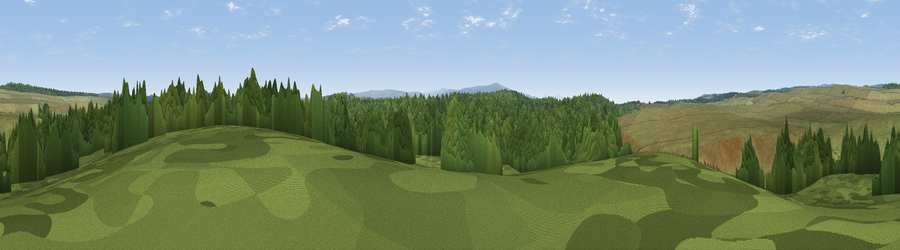

Viewpoint near Gilsland
#44579 in England · top 98% of its area beats it · near Gilsland · open accessWhere it is
The exact computed spot (NY 65425 70125). Click the marker for map links.
Public access: this spot lies on mapped open-access land (CRoW Act 2000) — you may roam here on foot. Computed from Natural England's CRoW access layer and OpenStreetMap rights of way — not the legal definitive map. Always verify locally.
The view, rendered

A 360° render of this exact spot computed from the terrain model, tree cover and land cover — summer colours, afternoon light, calibrated against photographs of famous viewpoints. Real trees, hedges and buildings will differ in detail.
The panorama
Grey silhouette: terrain skyline in each direction (720 bearings, Earth curvature and refraction included). Dashed green: skyline with trees (+15 m) and buildings (+8 m) as obstacles. Blue strip: how far the ground is visible on each bearing.
Where the view opens
Wedge length = distance to the farthest visible ground on that bearing (vegetation-aware). Rings at 10, 25 and 50 km.
What fills the view
59% grassland · 41% woodland
Angular shares of the visible panorama (visual magnitude), not map area. Landscape diversity 0.30 (0–1 Shannon).
Key numbers
More beautiful places nearby
The staircase of upgrades: each row has a higher view potential than everything closer. Driving times are estimates from straight-line distance, calibrated against real road routing — check an actual route before setting out.
| Place | Direction | Drive | Score |
|---|---|---|---|
| Viewpoint near Gilsland | SSW · 2 km | ~5 min | 59.1 |
| Viewpoint near Greenhead | SSE · 4 km | ~10 min | 59.9 |
| Viewpoint near Greenhead | SSE · 4 km | ~10 min | 62.7 |
| Walltown Hill | SE · 4 km | ~10 min | 64.9 |
| Viewpoint near Gilsland | SSW · 7 km | ~15 min | 66.6 |
| Viewpoint near Bewcastle | WNW · 8 km | ~17 min | 73.2 |
| Viewpoint near Bewcastle | NW · 11 km | ~21 min | 78.9 |
| Viewpoint c11644_7156 | NNW · 14 km | ~26 min | 80.8 |
55.02445, -2.54235 · source: screening · position refined by local search. Computed location — check access rights before visiting.